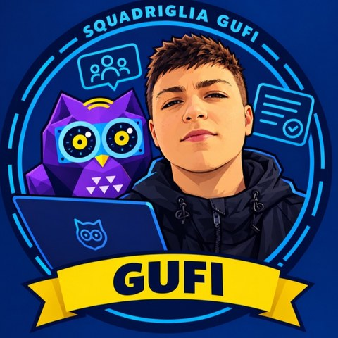
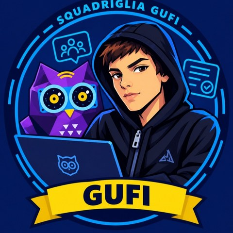

Classe 3ATA · Automazione · ITI "G. Bosco Lucarelli"
«Scrivete qui il vostro motto.»
Le nostre esercitazioniSiamo la squadriglia Gufi della 3ATA, corso di Automazione. Come il gufo, osserviamo con attenzione e lavoriamo con ordine: ognuno ha un compito preciso e insieme consegniamo lavori puliti e fatti bene.
Nei nostri avatar il gufo viola ci accompagna in ogni ruolo: dal computer del capo agli appunti del redattore, fino alle ricerche del logistico.
Ognuno ha un ruolo e il suo avatar.

Capo squadriglia
Guida la squadriglia, coordina le riunioni, prende le decisioni importanti durante le imprese e rappresenta il gruppo davanti ai capi e al reparto.

Redattore
Si occupa della parte scritta, degli appunti e di raccogliere informazioni e ricerche del gruppo. Tiene traccia di tutto per consegnare un lavoro pulito e ordinato.
Logistico
Cerca le fonti più affidabili (libri, siti web) e verifica che tutto il necessario per completare il lavoro sia pronto nei tempi giusti.
Ruolo da definire
Avatar in arrivo.
Un lavoro dopo l'altro: qui trovate tutto quello che abbiamo consegnato.
Una voce per ogni lezione.
Abbiamo creato i nostri avatar e consegnato la relazione di presentazione del team, con il ruolo di ognuno.
Abbiamo creato la carta intestata e il modello di relazione tecnica.